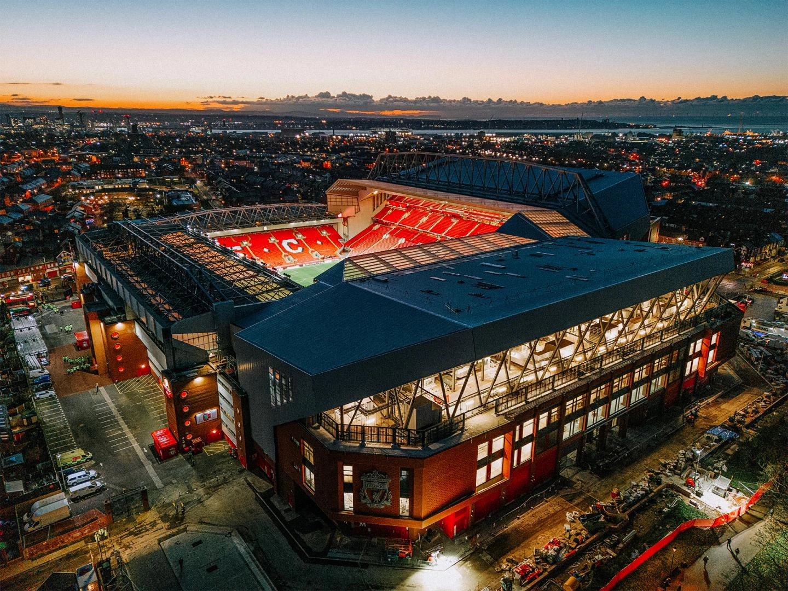

EST. 1892
Liverpool Football Club
A student fan site celebrating the Reds

Welcome to the Red Side
Liverpool Football Club was founded in 1892 and plays its home matches at Anfield. Based in the city of Liverpool, the club has grown from a local team into one of the most recognized names in world football.
The club is famous for passionate supporters, memorable European nights, and teams that play with energy and determination. Anfield's atmosphere has helped make the stadium an important part of Liverpool's identity.
This website introduces the current men's squad and looks back at the trophies and major moments that shaped the club. Use the links above to move between all three pages.